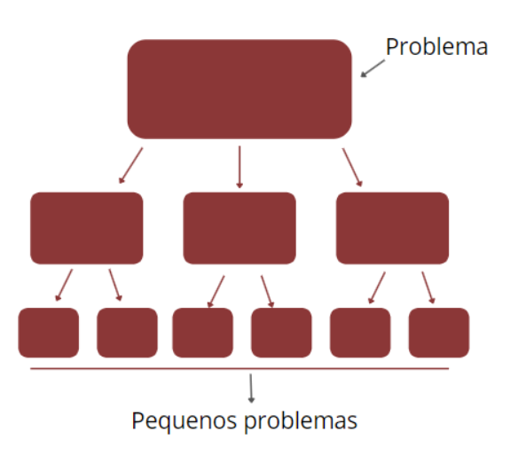
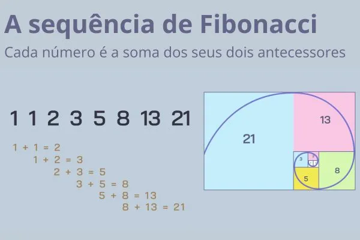
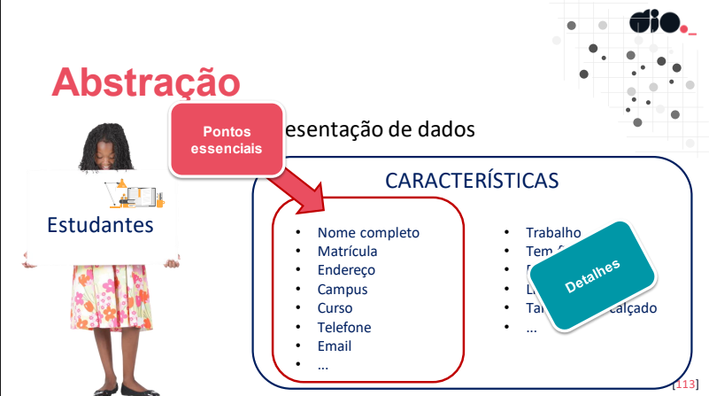
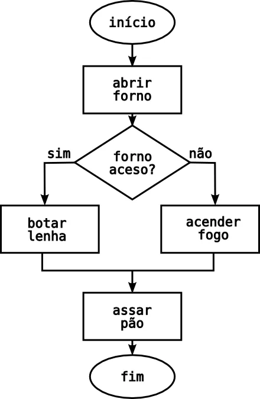

Pilares do Pensamento Computacional
O que é Pensamento Computacional? 🤔
O pensamento computacional é a capacidade de resolver problemas de forma eficiente e estratégica. Seus pilares são:
Decomposição Reconhecimento de padrões Abstração Algoritmos
Decomposição
Consiste em dividir um problema complexo em partes menores e mais gerenciáveis.
Meu Deus! Isso é um problemão!Vamos resolver isso por partes!

Fonte da imagem: Bretybe Exemplos de Decomposição Paciência, vamos resolver de tiquin em tiquin em vez de se embolar!
Resolver um problema matemático , como calcular a área de uma figura composta, dividindo-a em formas
geométricas menores (retângulos, triângulos, etc.) e somando as áreas individuais. Planejar um projeto escolar , como a organização de uma feira de ciências, dividindo as tarefas em etapas:
design dos estandes, seleção dos temas, coordenação dos alunos e preparação dos materiais.
Reconhecimento de Padrões
Consiste em identificar semelhanças em dados para resolver problemas de forma mais eficiente.
Esse problema tem comportamentos que se repetem......Vamos usar isso a nosso favor!

Fonte da imagem: Brasil Escola Exemplos de Reconhecimento de Padrões
Os lobos são animais que possuem padrões de comportamento e sociais bem definidos.
Identificar a sequência de Fibonacci, onde cada número é a soma dos dois anteriores:
0, 1, 1, 2, 3, 5, 8, 13, 21, 34, etc.Reconhecer a estrutura de um texto, como a presença de parágrafos, títulos, subtítulos, listas, etc.
Abstração
Consiste em simplificar um problema complexo, ignorando detalhes desnecessários e focando no essencial.
Foca no que é importante!
Esse problema é muito complicado......Vamos simplificar isso!

Fonte da imagem: DIO.me Exemplos de Abstração O objetivo, é ser objetivo!
Descrever um objeto , como um carro, por suas características principais: cor, modelo, marca, ano, etc.Projetar um sistema , como um site, por suas funcionalidades essenciais: login, cadastro, busca, etc.
Algoritmos
Consiste em criar uma sequência de passos lógicos para resolver um problema de forma eficiente.
Passo a passo!
Como vou resolver isso?...Vamos seguir esses passos!

Fonte da imagem: DIO.me Exemplos de Algoritmos Fluxogramas ajudam muito a organizar algoritmos!
Preparar uma receita , como um bolo, seguindo as instruções passo a passo: ingredientes, utensílios,
modo de preparo, etc.Executar uma tarefa , como lavar a louça, dividindo as etapas em sequência:
ensaboar, enxaguar, secar, guardar, etc.
Página e documentação por João Teixeira
Página construída com documentação escrita e pesquisada por João Teixeira utilizando fontes da internet.
Esse estudo de pensamento computacional tem como objetivo ser a entrega de um
projeto da "Formação HTML Developer" da plataforma DIO ao mesmo tempo que reforço meus conhecimentos do curso
"Introdução à Programação e Pensamento Computacional"